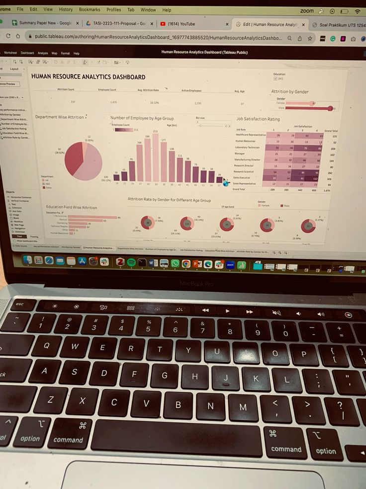

Sobre mí: Luciana Torres
Soy estudiante de Ciencias de la Computación con interés en el desarrollo de software y las bases de datos. Me encuentro aprendiendo tecnologías web y desarrollando proyectos personales para fortalecer y ampliar mis habilidades como programadora. Considero que cada proyecto es una oportunidad para aprender nuevas herramientas y mejorar mis conocimientos.
Mi formación en Ciencias de la Computación
Actualmente me encuentro cursando la carrera de Ciencias de la Computación, donde he adquirido conocimientos en programación, estructuras de datos, análisis de datos, algoritmos de ordenación y algoritmos de búsqueda. Además, continúo aprendiendo de manera autodidacta tecnologías relacionadas con el desarrollo web y el análisis de datos.
Mis objetivos profesionales
Mi objetivo es desarrollarme profesionalmente en el área del análisis de datos, participando en proyectos que me permitan seguir aprendiendo, trabajar en equipo y aportar soluciones innovadoras. Este portafolio reúne algunos de los proyectos y conocimientos que voy adquiriendo durante mi formación.
